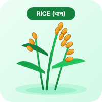
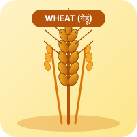

RootCause
Smart Offline Agricultural Disease Diagnostic & Advisory System
Detect Plant Disease
Take or upload a leaf photo for instant offline diagnosis and treatment advice.
Select Crop to Diagnose
Guides →

Ask a Farming Question
Send your leaf photo and query directly to Krishi experts for personalized advisory.
Recent Diagnoses
History →Select Crop for Analysis
Choose the crop you are inspecting in your field
Rice Paddy (धान)
Kharif CropWheat (गेहूं)
Rabi CropTips for Accurate Diagnosis:
- Focus closely on the spots or discoloured area.
- Use bright, natural daylight. Avoid deep shadows.
- Hold camera steady at 15-20 cm from leaf.
- Clean dust or water drops from leaf if possible.
Bacterial Leaf Blight
Key Symptoms:
Water-soaked stripes along leaf margins turning yellow-white...
Bacterial Leaf Blight
Disease Overview
Visible Signs on Leaf:
Detailed Symptoms
Causes & Environmental Triggers
Recommended Treatment
Prevention & Best Farming Practices
Agricultural Extension Warning
Always wear protective gloves and mask when spraying fungicides. Consult your local Krishi Vigyan Kendra (KVK) or Block Agriculture Officer before chemical application.
Language / भाषा
Choose your preferred regional language
Diagnosis Records
Saved offline on your device
App Settings
Configure language, voice, and offline options
Language / भाषा
English
Voice Advisory Reading
Read out treatment advice aloud
Speech Rate
Audio playback speed
Offline Database
9 diseases cached locally (100% offline)
Machine Learning Backend Hook
Status: Standalone Offline Engine Active
Toll-Free Farmer Support from 6:00 AM to 10:00 PM (All Indian Languages)
📞 Call Toll-Free HelplineRootCause System
Version: 1.0.0 (BMS Hacks)
Built with original RootCause design system. Offline-first architecture.
Disease Knowledge Guides
Comprehensive offline pathology profiles for Rice and Wheat